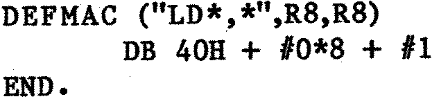

80-Bus News |
January–February 1984 · Volume 3 · Issue 1 |
| Page 49 of 55 |
|---|
yourself). RAVEN then becomes a cross-assembler for the 6502. Other uses for this powerful macro facility would be to add extra instructions to the Z80, e.g. LD (HL),HL etc. Or if you are involved in a particular field of interest such as robotics, music or graphics, then you could write your own personal programming language where each program instruction would in fact be a macro name. RAVEN then effectively becomes a compiler for your new language.
One notable ommission from the Z80 library was the NAS-SYS restart instructions. They can be easily added by writing a few extra macros using the methods described very clearly in the manual. The comma in the jump conditional instructions was missing, and as I was used to putting it in, I altered the macros accordingly. Another much more serious error was only discovered after spending many hours puzzling over apparently perfect programs which would just keep on crashing. The problem was that the assembler was allowing relative jumps up to +/ 255 instead of +129 to −126. So, for instance, if the jump was between +130 and +255 the error would not be detected and the byte put into the object code would in fact work out to be a negative jump and the program would therefore crash. I managed to overcome this problem by rewriting the macro definition dealing with relative jumps. Being rather surprised that this problem had not been spotted sooner, I wrote to the author, so he is now aware of it.
At first you might think that there has to be a macro definition for every possible permutation of instruction (about 750 I think), but RAVEN provides facilities for much more concise definitions so that each instruction “type” (e.g. 8-bit register load) may be defined by one macro. The parameters supplied to the macro determine the machine code generated. It is necesary to read the manual to fully understand the method, but I will give an example which may give some idea. e.g. the macro to define 8-bit register to register loads:

“LD , " is the name of the macro. The asterixes show the position that the parameters must be in the macro name (separated by a comma in this case). R8 stipulates that the parameters must belong to a previously defined set, R8, which is a set of the 8-bit register names A to L and A is assigned a value of 7, B a value of 0 etc. DB is the define byte pseudo-op. #0 and #1 refer to the first and second parameters respectively. The expression thus generates the required bit pattern according to the registers specified (see the Z80 Technical Manual for a breakdown of the bit patterns). e.g. for LD A,B the expression is evaluated like so:
| 40H: | 01000000 | |||
| (Reg A = 7) | #0*8: | 00111000 | ||
| (Reg B = 0) | #1 : | 00000000 | ||
| Total | 01111000 | = 78H |
There are also several Pascal-like control structures for the generation of loops within macros. These may be used for the production of data tables. e.g. a macro to clear a block of memory of any size:
| Page 49 of 55 |
|---|